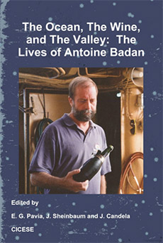

Referencias
Antonio Badán Dangon
1951 - 2008
El vino y el océano son temas que quizá no tienen entre ellos mucha relación, pero cuando se habla de Antonio Badan, ambos salen a flote necesariamente, pues este mexicano de origen franco-suizo no solo fue un oceanógrafo muy reconocido sino también un vitinicultor exitoso.
Estudió oceanología en la Escuela Superior de Ciencias Marinas de la Universidad Autónoma de Baja California y más adelante, hizo el doctorado en la Escuela de Oceanografía de la Universidad de Oregon, Estados Unidos.
En 1981 ingresó al Centro de Investigación Científica y de Educación Superior de Ensenada (CICESE), donde laboró el resto de su vida. Dentro de esta institución, lideró a un grupo de investigadores que trabajó con PEMEX en el Proyecto integral de mediciones oceanográficas, único en su tipo en el CICESE, con el cual ahora se tiene una descripción más amplia y precisa de los procesos oceanográficos (como la circulación del agua profunda y el oleaje) y meteorológicos que ocurren en el Golfo de México.
La información recabada hasta el momento ha sido de gran valor para las distintas actividades económicas que se realizan en la zona, incluyendo la pesca y el turismo; para pronosticar fenómenos de gran impacto como ciclones, así como para mejorar el diseño de las plataformas petroleras.
En su trayectoria como empresario, Antonio dirigió el viñedo heredado por sus padres localizado en Baja California. Debido a que la conservación del ambiente también era una de sus inquietudes, se dedicó a buscar estrategias para hacer sustentable esta actividad, sobre todo por el problema de escasez y sobreexplotación del agua en la región.
Antonio también se dedicó a la docencia. Además fue miembro de la Academia Mexicana de Ciencias, de la American Geophysical Union y de la Oceanography Society.
Aportación
-

Academia Mexicana de Ciencias
Boletín AMC/172/11
Antoine Badan, un científico humanista